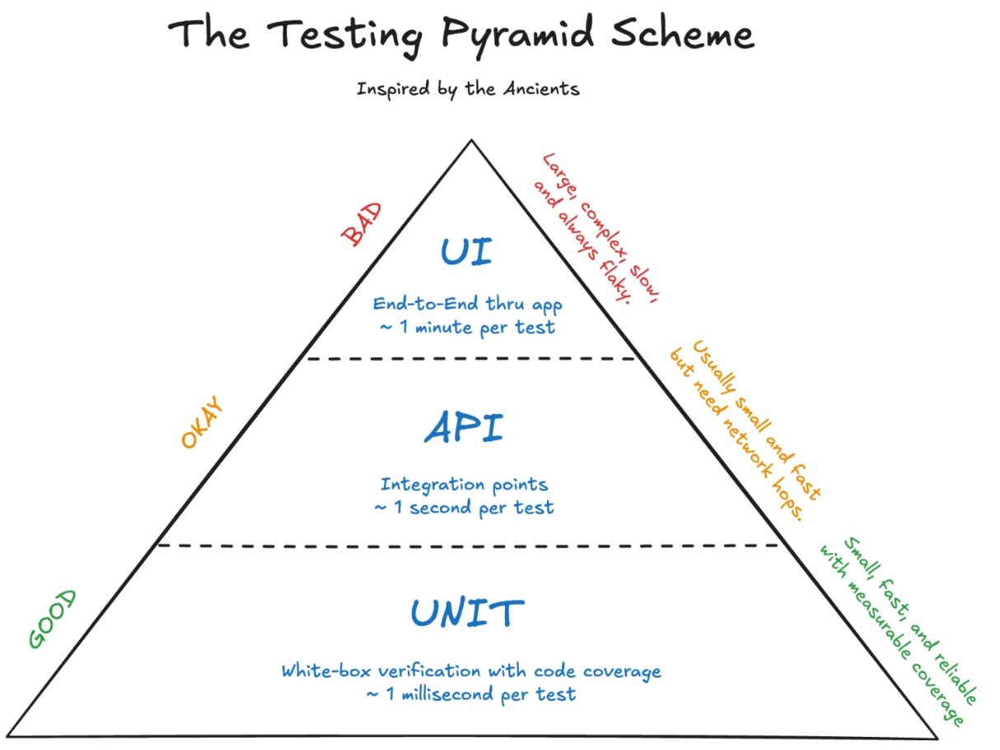

1. The Test Pyramid & Testing Types

- E2E Testing: Tests the entire system flow from the user interface down to the DB. Slowest, most expensive, and most fragile.
- Integration Testing: Verifies interaction between integrated modules/components (e.g., Database, External APIs). Moderate speed and complexity.
- Unit Testing: Tests individual functions, methods, or classes in isolation. Fast, cheap, highly reliable, and form the foundation (majority) of tests.
2. Principles
Test-Driven Development (TDD):
- 🔴 Red: Write a failing unit test before writing any code.
- 🟢 Green: Write the minimum code required to pass the test.
- 🔵 Refactor: Clean up and optimize code while keeping tests green.
FIRST Principles:
- F - Fast: Unit tests should run instantly (milliseconds).
- I - Independent: Tests must not depend on each other or run in a specific order.
- R - Repeatable: Produces the exact same result in any environment.
- S - Self-Validating: Pass or fail automatically without manual inspection.
- T - Timely: Written just before or alongside the production code.
3. AAA Pattern (Arrange-Act-Assert)
A standard structure for organizing unit tests for maximum readability:
@Test
void shouldCalculateTotalPriceWithTax() {
// 1. ARRANGE - Setup test data and dependencies
Calculator calc = new Calculator();
double price = 100.0;
// 2. ACT - Execute the method under test
double total = calc.addTax(price);
// 3. ASSERT - Verify the result
assertEquals(119.0, total);
}4. Basic JUnit 5 Annotations
class OrderServiceTest {
@BeforeAll
static void initAll() {
// Runs ONCE before all tests in class (setup test DB connection)
}
@BeforeEach
void init() {
// Runs BEFORE EACH @Test method (re-initialize fresh objects)
}
@Test
void testOrderCreation() {
// Defines a test method
}
@Test
@Disabled("Pending bug fix #102")
void testLegacyFeature() {
// Skips test execution
}
@AfterEach
void tearDown() {
// Runs AFTER EACH @Test method (clear memory/state)
}
@AfterAll
static void tearDownAll() {
// Runs ONCE after all tests execution finishes
}
}5. REST Assured (API Testing)
Java library for testing RESTful web services using a Given-When-Then (BDD) syntax:
import static io.restassured.RestAssured.*;
import static org.hamcrest.Matchers.*;
import org.junit.jupiter.api.Test;
class UserApiTest {
@Test
void shouldFetchUserSuccessfully() {
given()
.baseUri("https://api.example.com")
.header("Content-Type", "application/json")
.queryParam("status", "active")
.when()
.get("/users/1")
.then()
.statusCode(200)
.body("id", equalTo(1))
.body("name", equalTo("Alex"))
.body("roles", hasItem("ADMIN"));
}
}